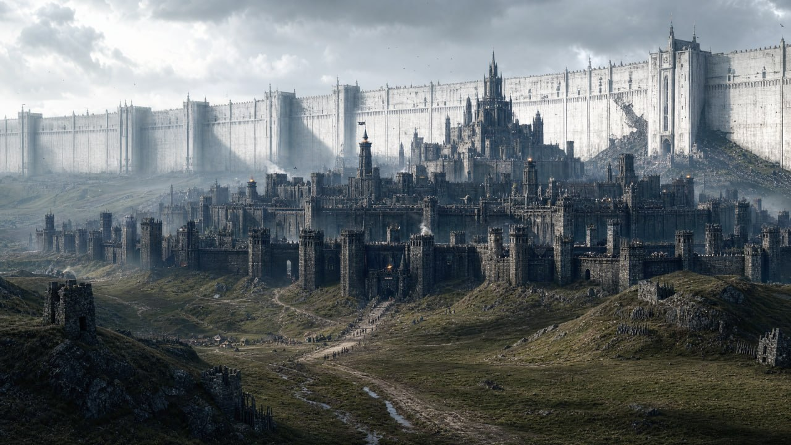
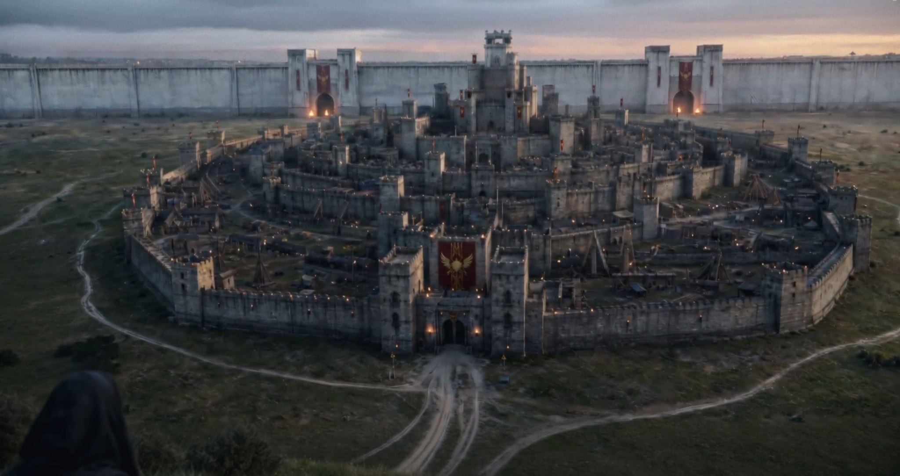
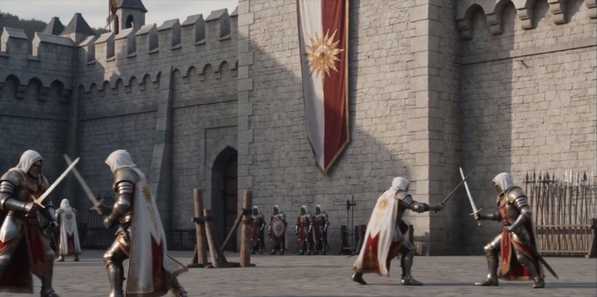
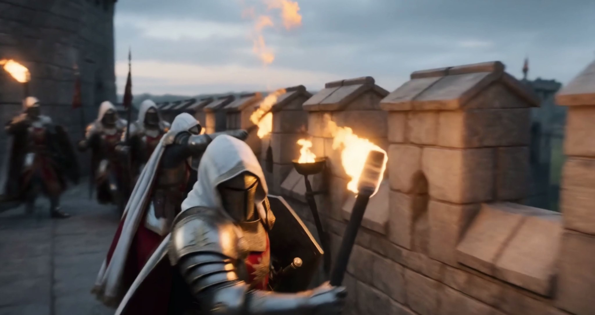

Каменные стены
Высокие укрепления, составляющие основу обороны Цернхорна.

Локация / Фраустер
Дочь титанов
Одна из важнейших крепостей Фраустера и многовековой оборонительный рубеж на пути к сердцу королевства.
Крепость ФраустераАрхивная запись · Том I
I / Века обороны
Цернхорн — одна из старейших и наиболее известных крепостей Фраустера. За огромные каменные стены и многовековую историю обороны крепость получила прозвище «Дочь титанов».
К моменту первого описания в книге Цернхорн существует уже много сотен лет. Тогда говорится, что за всё это время никто не смог его покорить.
Крепость стоит на торговой дороге между Майзервином и столицей Фраустера. Такое положение делает её одним из важнейших рубежей на пути вглубь королевства.
II / Укрепления

Основу обороны Цернхорна составляют высокие каменные стены и укрепления, позволяющие крепости выдерживать нападения.
На стенах размещаются защитники и боевые орудия. При угрозе оборонительные и осадные орудия занимают подготовленные позиции.
III / Постоянная готовность
Цернхорн рассчитан на постоянную оборону. Крепость располагает охраной и дозорами; при тревоге защитники занимают стены и оборонительные позиции.
Сигнальные колокола позволяют быстро поднять крепость по тревоге. В распоряжении защитников находятся боевые и осадные орудия. При подготовке к крупному нападению часть вооружения устанавливается на стенах, а позиции могут дополнительно усиливаться деревянными укреплениями.

IV / Дозор
Даже вне открытого сражения оборона Цернхорна строится вокруг постоянной готовности. Дозоры занимают стены, охрана следит за укреплениями, а при появлении угрозы сигнальные колокола поднимают крепость по тревоге.

Когда звонят колокола Цернхорна,
крепость готовится к бою.
V / Значение
Цернхорн стоит на направлении от Майзервина к столице Фраустера. В период крупной военной угрозы крепость становится последним крупным оборонительным рубежом перед несколькими деревнями и столицей.
Для усиления обороны сюда могут направляться дополнительные войска и ресурсы.
VI / Стойкость
Цернхорн способен сохранять оборонительное значение даже после тяжёлых повреждений. После одного из крупных сражений часть стен и башен была обуглена или частично разрушена, а внутренние помещения получили более серьёзный урон.
Стены и башни при этом сохранились. Защитники вновь выставили дозоры и вернули вооружение на уцелевшие участки стен.
Цернхорн можно ранить.
Заставить его перестать быть крепостью — куда сложнее.
VII / Подтверждённые элементы
Высокие укрепления, составляющие основу обороны Цернхорна.
Вход в крепость, защищённый древней магией.
Часть оборонительной архитектуры крепости.
Вооружение, размещаемое на стенах и подготовленных позициях.
Используются для поднятия крепости по тревоге.
Пространства внутри укреплённого комплекса; при тяжёлом сражении они могут пострадать сильнее стен.